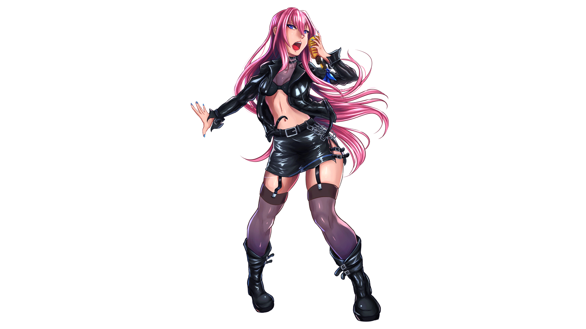

I’ve tried making an animation before, but I gave up before I truly started. I knew going into this project I wanted to test the waters again, albeit a little bit more safely by following the instructions to a T, especially for the blinking animation. Instead of drawing new cels, I squashed the eyes to make it look like they were closing. I did copy the eyes and edited the vectors a bit in Illustrator to open them up for the second half of the animation. I drew the white light reflection dots to give the eyes more life, and chose to make one of the eyes wink because who doesn’t love a good eye wink? In all seriousness, it was fun to make this and it went by rather smoothly!
 <As for the puppet animation, I knew I wanted to experiment with one of my drawings. I chose that one because it was a full body illustration and also one of my favorite fictional characters, Megurine Luka. Although it’s probably more appropriate to call her a product or instrument as she’s what’s known as a vocal synthesizer software known as VOCALOID, with this costume being one of the costumes for a rhythm game with other VOCALOID characters like Hatsune Miku. There was some difficulty getting the puppet wrapping to work as in the original image, she has a microphone cord swirling around her. I decided to take it out by going into the original file, hiding it and its accompanying layers, and hiding it while I made and flattened a copy of the folder without it.